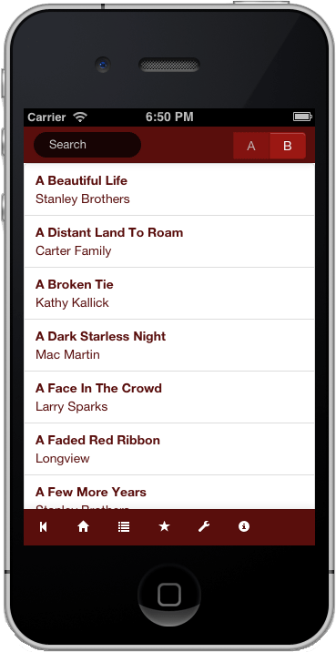

<!doctype html>
<html lang="en" ng-app="pickbook" manifest="/offline.appcache">
<head>

  <meta charset="utf-8">
  <title>pickbook</title>

  <meta name="viewport" content="initial-scale = 1.0,maximum-scale = 1.0" />
  <meta name="apple-mobile-web-app-capable" content="yes" />
  <meta name="apple-mobile-web-app-status-bar-style" content="black" />
  <link rel="apple-touch-icon" href="img/iphone_icon.png" />
  <link rel="apple-touch-startup-image" href="img/iphone_splash.png" />

  <link rel="stylesheet" href="compiled/pickbook.css"/>
  <link rel="stylesheet" href="vendor/add2home.css"/>

</head>
<body class="viewport">


  <div ng-view ng-hide="modalView"></div>
  <div ng-include="'bottombar.html'"></div>


  <script type="text/ng-template" id="bottombar.html">
  <div style="margin-top: 40px;"></div>
  <div class="navbar navbar-inverse navbar-fixed-bottom" ng-hide="noChrome_ignored">
    <div class="navbar-inner">
      <ul class="nav">
        <li><a onclick="history.go(-1)"><i class="icon-step-backward icon-white"></i></a></li>
        <li><a href="#"><i class="icon-home icon-white"></i></a></li>
        <li><a href="#/songs"><i class="icon-list icon-white"></i></a></li>
        <li><a href="#/favs"><i class="icon-star icon-white"></i></a></li>
        <li><a href="#/settings"><i class="icon-wrench icon-white"></i></a></li>
        <li><a href="#/about"><i class="icon-info-sign icon-white"></i></a></li>
      </ul>
    </div>
  </div>
</script>

  <script type="text/ng-template" id="home.html">
<div class="home">

  <div class="visible-desktop">

    <div class="banner">
      <div class="container">
        
      </div>
    </div>

    <div class="container">
      <div class="cell pull-left">
        
      </div>
      <div class="cell">
        <h4>1,700 bluegrass songs in the palm of your hand.</h4>
      </div>
    </div>

  </div>


  <div class="visible-phone">
    Phone Homescreen
  </div>


</div>

</script>


  <script type="text/ng-template" id="songs/index.html">

  <div class="navbar navbar-inverse navbar-fixed-top">
    <div class="navbar-inner" style="padding: 0 10px;">
      <div class="btn-group pull-right">
        <button class="btn btn-inverse" ng-show="letter != 'a'" ng-click="prevPage()">{{prevLetter | uppercase}}</button>
        <button class="btn btn-inverse disabled">{{letter | uppercase}}</button>
        <button class="btn btn-inverse" ng-show="letter != 'z'" ng-click="nextPage()">{{nextLetter | uppercase}}</button>
      </div>
      <form class="navbar-search">
        <input type="text" class="input-small search-query" ng-model="searchTerm" placeholder="Search">
      </form>
    </div>
  </div>
  <div style="margin-top: 40px;"></div>


  <div class="alert" ng-show="searchTerm && searchTerm.length < 3">
    <strong>Please type at least 3 letters to search</strong><br />
  </div>

  <ul class="nav nav-tabs nav-stacked">
    <li ng-repeat="song in songs | orderBy: name | filter: songSearch | filter: firstLetter | limitTo: 500">
    <a href="#/songs/{{song.id}}"> <strong>{{song.name}}</strong> <br /> {{song.artist}} &nbsp;</a>
    </li>
  </ul>

</script>

<script type="text/ng-template" id="songs/show.html">

  <div class="cell">
    <h5>{{song.name}}</h5>
    <h6><a href="#/artists/{{song.artistId}}">{{song.artist}}</a></h6>
    <div ng-bind-html-unsafe="htmlLyrics"></div>
    <hr />
    <a ng-hide="favs.contains(song.id)" class="btn btn-primary" ng-click="favs.add(song.id)"><i class="icon-star icon-white"></i> Star</a>
    <a ng-show="favs.contains(song.id)" class="btn" ng-click="favs.remove(song.id)"><i class="icon-star-empty"></i> Unstar</a>
  </div>

</script>

  <script type="text/ng-template" id="favs.html">
<div class="favs">

  <ul class="nav nav-tabs nav-stacked">
    <li ng-repeat="song in favSongs">
    <a href="#/songs/{{song.id}}"> <strong>{{song.name}}</strong> <br /> {{song.artist}} </a>
    </li>
  </ul>

</div>
</script>


  <script type="text/ng-template" id="about.html">
<div class="about cell">
  <h1>About</h1>
  <ul>
    <li><strong>John Kael</strong> - maintainer of BluegrassLyrics.com</li>
    <li><strong>Steve Perkins</strong> - developer of mobile site</li>
  </ul>

  <h4>Debug Info</h4>
  <pre>
  rendered: Thu Sep 13 2012 19:10:52 GMT-0400 (EDT)
  </pre>

</div>
</script>

  <script type="text/ng-template" id="settings.html">
<div class="settings cell">
  <h1>Settings</h1>
  <ul>
    <li>Font face: serif / sans-serif</li>
    <li>Font size</li>
    <li>Invert colors: light / dark</li>
  </ul>
</div>
</script>


  <script src="vendor/angular.js"></script>
  <script src="vendor/underscore.js"></script>
  <script src="vendor/add2home.js"></script>
  <script src="compiled/pickbook.js"></script>
</body>
</html>

